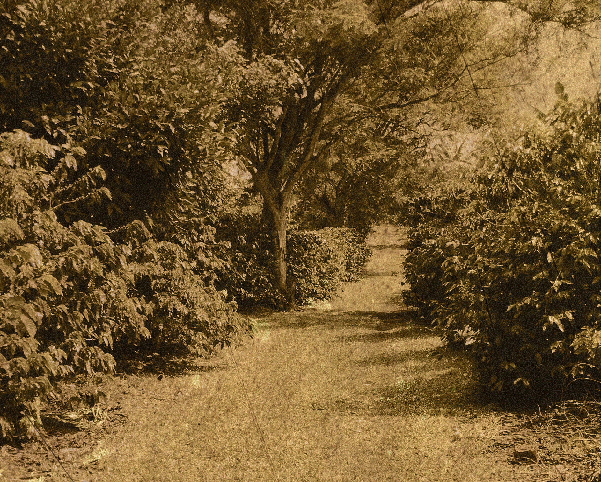
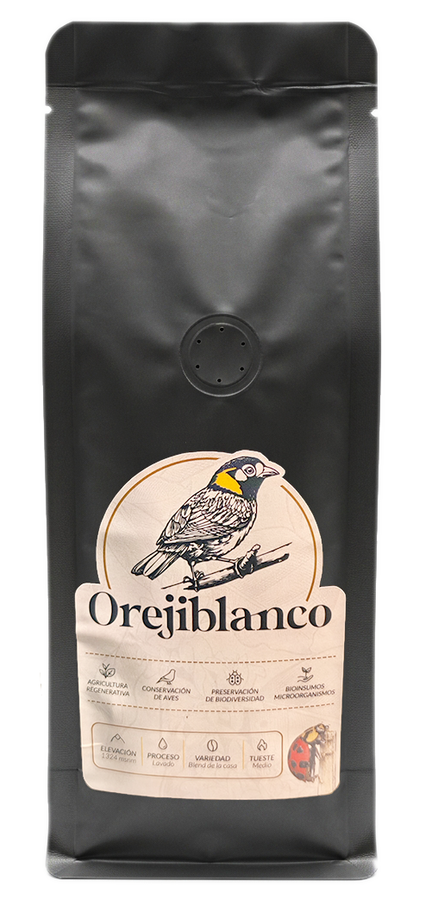

OREJIBLANCO
Una historia que comenzó hace generaciones y continúa hoy.
Orejiblanco es el resultado del trabajo y la dedicación de nuestra familia, arraigada en San Bosco de Santa Bárbara de Heredia.
Desde hace generaciones cultivamos café con respeto por la tierra y por las personas.
Con el tiempo hemos aprendido que el mejor café nace cuando cuidamos el suelo, la biodiversidad y cada detalle del proceso.
Hoy, Orejiblanco representa nuestro compromiso con la calidad, la sostenibilidad y con las futuras generaciones.

El café nos ha dado raíces,
la tierra nos ha dado todo.
OREJIBLANCO
Nuestro café nace en las montañas de Santa Bárbara de Heredia, donde cultivamos y cuidamos cada detalle desde la finca hasta la taza.

CAFÉ OREJIBLANCO
Disponible en tres presentaciones para disfrutar Orejiblanco en casa, regalar o compartir.